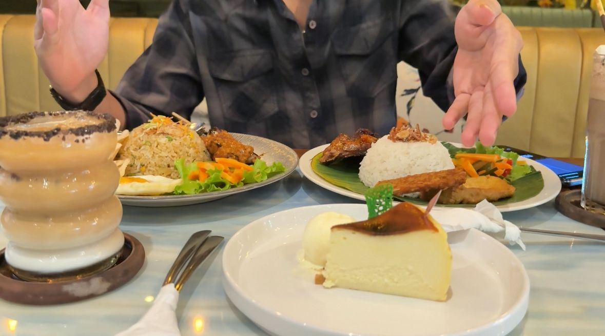
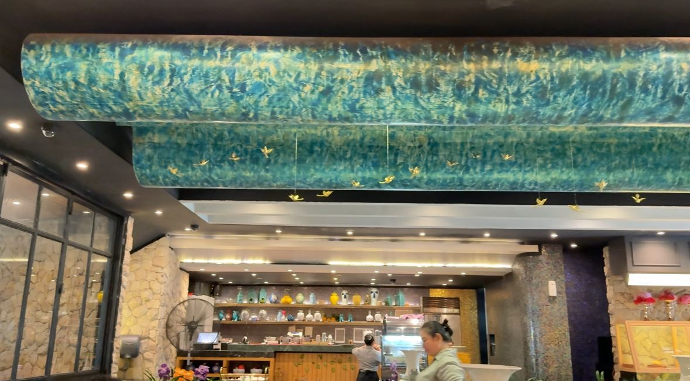
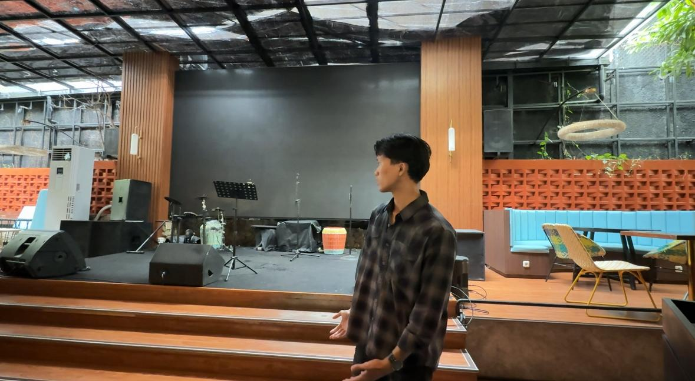

Tentang Saigon Bistro
1. Suasana Saigon
Saigon Bistro memberikan suasana yang estetik dan nyaman, cocok untuk santai bersama teman atau keluarga. Interior bernuansa tropikal modern, lengkap dengan pencahayaan hangat dan dekorasi bernuansa Vietnam membuat siapa pun merasa betah. Kebersihan dan tata letak meja yang luas memberi nilai lebih bagi pengunjung.
2. Makanan yang Dipesan
Makanan yang saya pesan memberikan pengalaman rasa yang menyenangkan. Mulai dari Nasi Goreng Kampung dengan bumbu khas nusantara, Ayam Goreng Colo-colo yang pedas segar, hingga Coklat Milkshake dan Hazelnut Latte yang menyegarkan dan beraroma. Tak lupa Cheesecake yang creamy sebagai dessert sempurna untuk menutup pengalaman makan.
3. Pelayanan Saigon
Pelayanan sangat cepat dan ramah. Staff di Saigon Bistro sangat membantu dan sopan dalam memberikan rekomendasi menu dan merespons kebutuhan pelanggan. Pengunjung dilayani dengan penuh perhatian sejak masuk hingga selesai makan.
4. Live Music di Malam Hari
Saat malam tiba, live music dari musisi lokal menghidupkan suasana Saigon Bistro. Lagu-lagu akustik yang dimainkan menciptakan ambience yang hangat dan romantis. Sangat cocok untuk pengunjung yang datang di malam akhir pekan.